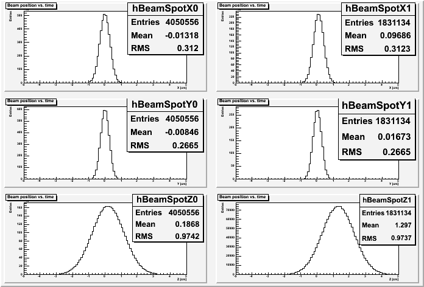

Got stuck? This is the solution
You add these histograms to the selector class in TBeamSpotSel.h:
TH1* fBeamSpotX[2]; // vtx0.x before and after the detector move TH1* fBeamSpotY[2]; // vtx0.y before and after the detector move TH1* fBeamSpotZ[2]; // vtx0.z before and after the detector move
They are an array of length 2 each, because we want to store the beam positions before and after the detector moved. Positions before the move will go into fBeamSpotX[0], after the move into fBeamSpotX[1]; and accordingly for Y, Z. You will also need to include TH1 ontop of TBeamSpotSel.h:
#include "TH1.h"
Now you have to create the histograms in TBeamSpotSel::BeginSlave():
void TBeamSpotSel::SlaveBegin(TTree * /*tree*/)
{
// The SlaveBegin() function is called after the Begin() function.
// When running with PROOF SlaveBegin() is called on each slave server.
// The tree argument is deprecated (on PROOF 0 is passed).
Info("SlaveBegin", "called!");
Double_t r = 5.; // the size of the histograms: min / max
fBeamSpotX[0]
= new TH1F("hBeamSpotX0",
"Beam position vs. time;X [cm];Entries",
100, -r, r);
fBeamSpotX[1]
= new TH1F("hBeamSpotX1",
"Beam position vs. time;X [cm];Entries",
100, -r, r);
fBeamSpotY[0]
= new TH1F("hBeamSpotY0",
"Beam position vs. time;Y [cm];Entries",
100, -r, r);
fBeamSpotY[1]
= new TH1F("hBeamSpotY1",
"Beam position vs. time;Y [cm];Entries",
100, -r, r);
fBeamSpotZ[0]
= new TH1F("hBeamSpotZ0",
"Beam position vs. time;Z [cm];Entries",
100, -r, r);
fBeamSpotZ[1]
= new TH1F("hBeamSpotZ1",
"Beam position vs. time;Z [cm];Entries",
100, -r, r);
GetOutputList()->Add(fBeamSpotX[0]);
GetOutputList()->Add(fBeamSpotX[1]);
GetOutputList()->Add(fBeamSpotY[0]);
GetOutputList()->Add(fBeamSpotY[1]);
GetOutputList()->Add(fBeamSpotZ[0]);
GetOutputList()->Add(fBeamSpotZ[1]);
}
As you have seen, the detector was moved at around 35-36 seconds. So we fill the position into index 0 before 35 seconds and into index 1 after 36 seconds; we skip the time between 35 and 36 seconds because we don't know exactly when it happened 9and because we don't care enough :-). So the filling code in TBeamSpotSel::Process() looks like that:
Bool_t TBeamSpotSel::Process(Long64_t entry)
{
fChain->GetTree()->GetEntry(entry);
// Get the time stamp of the entry.
// We only care about the seconds...
double_t sec = fEventInfo->Time().GetSecond();
// ...and their fraction:
sec += fEventInfo->MuSec() / 1000000.;
int timerange = -1;
if (sec > 36) timerange = 1; // after the move
else if (sec < 35) timerange = 0; // before the move
else return kTRUE; // somewhat during the move, ignore by going to the next event.
// fill histograms
Double_t x = fEventInfo->PrimaryVertex().X();
Double_t y = fEventInfo->PrimaryVertex().Y();
Double_t z = fEventInfo->PrimaryVertex().Z();
fBeamSpotX[timerange]->Fill(x);
fBeamSpotY[timerange]->Fill(y);
fBeamSpotZ[timerange]->Fill(z);
return kTRUE;
}
Now we have to draw the histograms, as before it's done in TBeamSpotSel::Terminate(). We create a canvas and divide it into six areas (easier than creating 6 canvases):
void TBeamSpotSel::Terminate()
{
const char* axisnames[] = {"X", "Y", "Z"};
TCanvas* canvas = new TCanvas();
canvas->Divide(2, 3); // create sub-pads in canvas: before / after (=2), x/y/z (=3)
for (int axis = 0; axis < 3; ++axis) { // loop over x, y, z
for (int timerange = 0; timerange < 2; ++timerange) {
canvas->cd(axis * 2 + timerange + 1); // "move" to a sub-pad in the canvas
TString name("hBeamSpot"); // "calculate" the name of the histogram for axis, timerange:
name += axisnames[axis]; // e.g. hBeamSpot -> hBeamSpotX
name += timerange; // e.g. hBeamSpotX -> hBeamSpotX0
TH1* h = (TH1*) GetOutputList()->FindObject(name);
h->Draw();
}
}
}
This will display the following canvas, note how it's divided ito 6 parts:
Looking at the RMS values you can see that the beam width is rather stable (up to the percent region), so you can claim that it does not change of the time you checked.